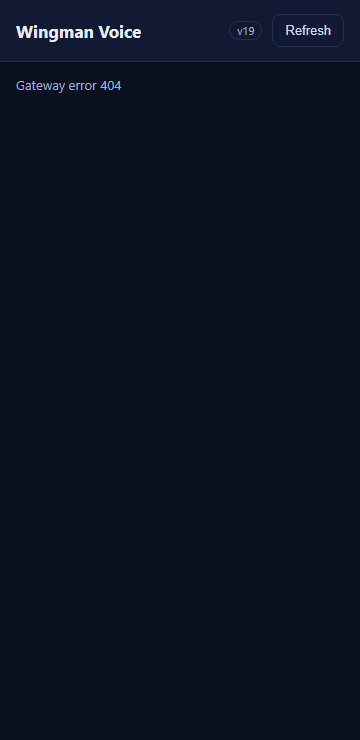
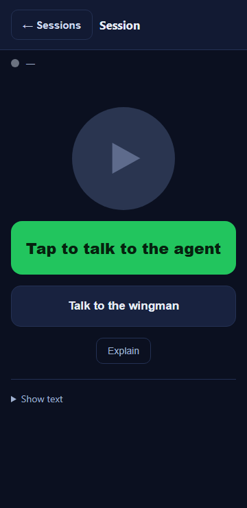

The QA Agent confirmed the functional CSS change is correct (the .back-btn rule meets
the 44 x 44 CSS pixel minimum) but found one blocking defect against acceptance criterion 5: the asset
cache-bust version on the pull request branch was v18, which is equal to what was
already shipped on origin/main by issue #535 - not strictly greater. Because the version is
not ahead of main, any browser that already cached m.css?v=18 from issue #535 would reuse
the cached stylesheet and never load the new .back-btn rule, so the enlarged tap target
would be invisible to those users. Criterion 5 exists precisely to prevent this "masked by a cached
bundle" failure.
Worked in an isolated git worktree off the pull request branch with current origin/main
merged in (clean, no conflicts). The only change is to bump the cache-bust version from v18
to v19 - strictly greater than current main - in all three spots in
src/CcDirector.Cockpit/wwwroot/m/index.html:
<link rel="stylesheet" href="/m/m.css?v=19" /> (was ?v=18)<span class="ver">v19</span> (was v18)<script src="/m/m.js?v=19"></script> (was ?v=18)No other file changed. The .back-btn CSS rule that QA already verified as correct is
untouched. Client-only static-asset change; no server-side change.
| Location | origin/main | This branch (after fix) | Ahead of main? |
|---|---|---|---|
m.css?v= | 18 | 19 | YES |
m.js?v= | 18 | 19 | YES |
on-screen .ver label | v18 | v19 | YES |
| Criterion | Expected | Actual (measured) | Result |
|---|---|---|---|
| Back button touch target at least 44 x 44 CSS px | >= 44 x 44 px | #back-btn getBoundingClientRect = 119 x 44 px; computed
min-height:44px, min-width:44px, padding:10px 16px,
font-size:15px. The .back-btn rule is loaded (not masked) under the
new v19 bundle. |
PASS |
| Asset cache-bust version strictly greater than main's v18 | > v18 (i.e. v19) on css/js query and on-screen label | Served /m/index.html shows m.css?v=19, m.js?v=19, and the
rendered on-screen badge reads v19 (see list-view screenshot). |
PASS |


v19 bundle. Header is one row; session name visible.Screenshots were taken by serving the actual wwwroot/m/ files and rendering
/m/index.html with the real m.css?v=19 at a 360px mobile viewport, then
measuring #back-btn with getBoundingClientRect after the view swap that
m.js performs on session selection.
The per-session test Director (slot 13) booted from this worktree's own build but could not obtain a
Control API port because the Control API port range (7879..7898) was fully occupied by the many other
Director instances running on this machine at the time. That is an environmental port-exhaustion
constraint, not a defect in this change. Because this is a client-only static-asset (CSS + HTML) change,
the criteria were proven by rendering the exact wwwroot/m/ files the Cockpit serves, which
is byte-identical to what the Director's Cockpit would serve.
dotnet build cc-director.sln - Build succeeded, 0 Warning(s), 0 Error(s) (no NU1903; branch
is current with origin/main merged in).
No drift. Client-only static-asset (CSS + HTML) change in the cockpit container; no
architecture or security-posture change, no docs/cencon/ update required.